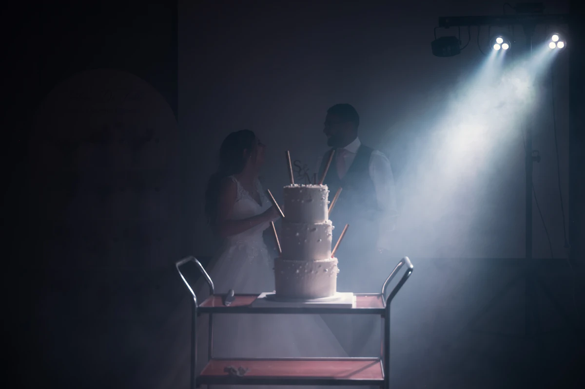

01Le regard

Photographe à Ath Wallonie & Bruxelles
Des photos naturelles, qui vous ressemblent.
Choisissez une zone de mise au point — ou faites défiler
02La lumière
La lumière d'abord.
Naturelle, douce, travaillée sur place. Des couleurs fidèles, sans filtre forcé.
04Votre galerie
Vos photos, rien qu'à vous.
- Réponse sous 48 h
- Galerie privée en ligne
- Aucune limite de photos livrées
Et maintenant